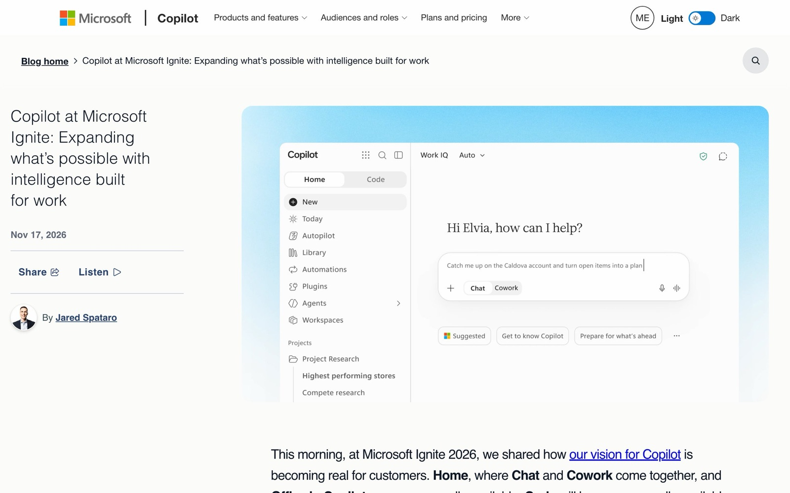
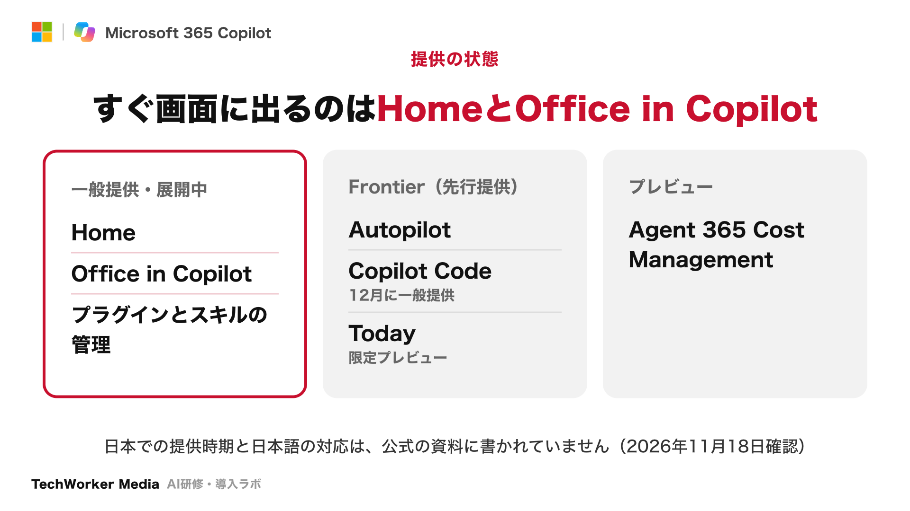
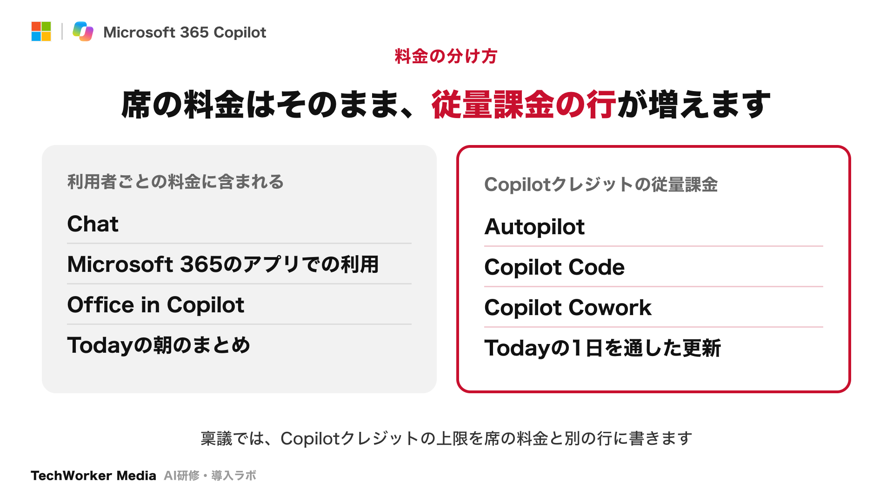
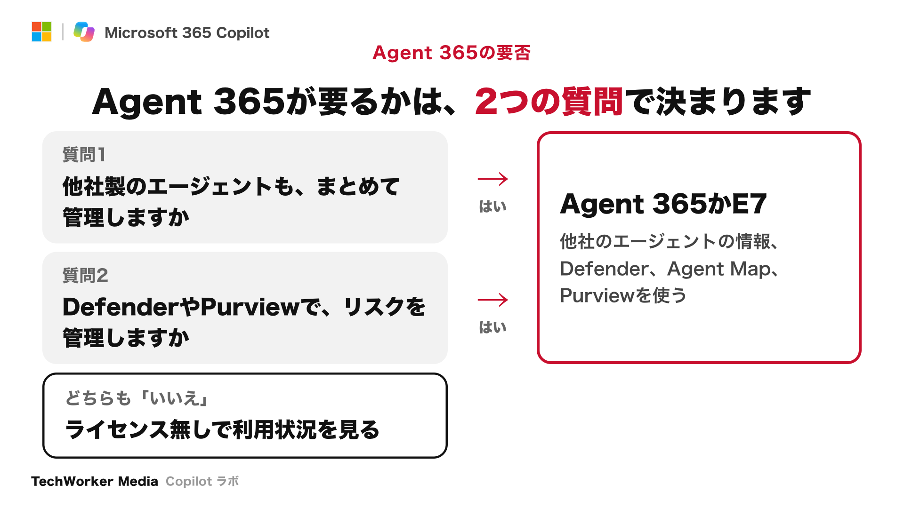
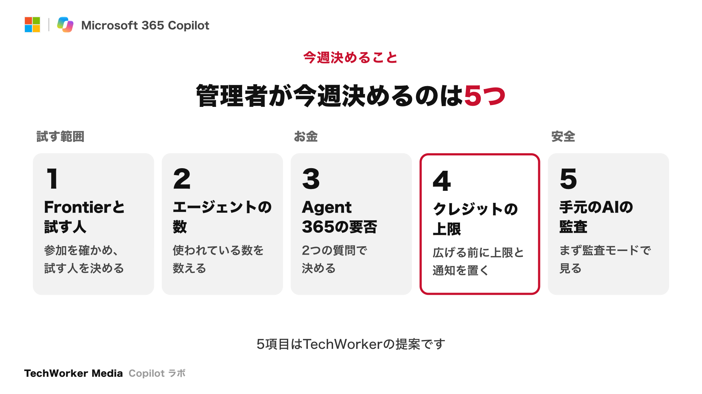

Microsoft Ignite 2026（2026年11月17〜20日）に合わせて、Microsoftは発表をまとめたBook of Newsを公開しました。管理者に関わる要点は次の3つです。
- 料金：Microsoft 365 Copilotの料金を変える発表は見当たりません。エージェントが進める機能（Autopilot、Copilot Codeなど）は、Copilotクレジットの従量課金です。
- Agent 365：Microsoft製のエージェントの利用状況は、Agent 365のライセンスが無くても見られます。統制とセキュリティには、Agent 365かMicrosoft 365 E7が要ります。
- 新機能：AutopilotやCopilot Codeは、先行提供のFrontierプログラムから始まります。
Book of News、公式ブログ、日本向けの料金ページ（2026年11月18日確認）をもとに、日本の会社の管理者が決めることを整理します。

出典：Microsoft Copilot Blog（2026年11月17日）の画面。新しいCopilotアプリのHomeで、左にToday・Autopilot、入力欄にChatとCoworkの切り替えがあります（2026年11月20日に撮影）
Ignite 2026で、Copilotの何が発表されましたか？
CopilotアプリのChatとCoworkの統合、常に動くエージェント、アプリ作り、費用の管理、エージェントの統制が中心です。提供の状態は機能ごとに違います。

新しいエージェントのAutopilotは、指示を待たずに仕事を進めます。Microsoftは11月17日のブログで、管理者が持つ権限を次のように書いています。
原文“Each Autopilot has its own Microsoft Entra Agent ID and a named manager. IT can scope its access and block it anytime.”
日本語訳Autopilotはそれぞれ、自分のMicrosoft Entra Agent IDと、担当する人（manager）を持ちます。IT部門はアクセスの範囲を決め、いつでもブロックできます。
Book of Newsに載った発表のうち、Copilotの管理者に関わる物を、提供の状態ごとに並べます。
| 発表 | 何ができるか | 提供の状態 | 料金の扱い |
|---|---|---|---|
| Home | Copilotアプリで、ChatとCoworkの入口を1つにする | 世界で順に展開中 | 記載なし |
| Office in Copilot | CopilotアプリでWord・Excel・PowerPointを作る | 一般提供 | ライセンスに含まれる（公式ブログ） |
| Autopilot | 指示を待たずに、定期の作業や返信の催促を進める | Frontierで展開 | 従量課金の一覧に載る |
| Copilot Code | 言葉でダッシュボードや管理表のアプリを作る | Frontier。12月に一般提供の予定 | 従量課金の一覧に載る |
| Today | メールや予定から、その日の優先事項と次の作業を出す | Frontierの限定プレビュー | 朝のまとめは含まれる。1日の更新はクレジット |
| プラグインとスキルの管理 | 使える人とグループを管理センターで決める | 一般提供 | 記載なし |
| Agent 365 Cost Management | 従量課金のAIの支出を見て、上限と通知を置く | プレビュー | 記載なし |
出典：Microsoft「Microsoft Ignite 2026 Book of News」、Microsoft Copilot Blog（2026年11月17日）。いずれも2026年11月18日確認
すぐに多くの人の画面へ出るのは、HomeとOffice in Copilotです。Homeは9月に発表され、世界で順に展開されています。Autopilot、Copilot Code、Todayは、Frontierに参加している会社から始まります。
日本での提供時期と日本語の対応は、Book of Newsにも公式ブログにも書かれていません。
ライセンスと料金は、何が変わりましたか？
Copilot本体の料金の変更は見当たりません。変わったのは、Agent 365が要る範囲と、新しい機能がどの料金に入るかです。

Microsoftは11月16日のブログで、Copilotの料金の分け方を次のように書いています。
原文“Chat and Microsoft 365 app usage is included in the Copilot user subscription … Agentic workflows on Copilot run on usage-based billing with Copilot Credits.”
日本語訳チャットとMicrosoft 365のアプリでの利用は、Copilotの利用者ごとのサブスクリプションに含まれます。（中略）エージェントが進める作業は、Copilotクレジットによる従量課金で動きます。
日本向けの料金ページで、関係するライセンスの価格を確かめました。
| ライセンス | 1ユーザーの月額（税抜） | 中身 |
|---|---|---|
| Microsoft 365 Copilot | 4,497円相当（年払い）。月ごとの支払いは4,722円（年間契約） | 対象のMicrosoft 365のライセンスが別に要る |
| Agent 365 | 2,248円相当（年払い） | エージェントの管理・統制・保護。1人ごとのライセンス |
| Microsoft 365 E7 | 14,842円相当（年払い） | Copilot、Agent 365、セキュリティと管理の機能をまとめた版 |
| Microsoft 365 E7（Teamsなし） | 13,560円相当（年払い） | E7からTeamsを除いた版 |
出典：Microsoft「Microsoft Agent 365」「Microsoft 365 Copilot（大企業向け）」の日本向けページ（2026年11月18日確認）。価格に消費税は含まれません
新しい機能の料金の扱いはBook of Newsに次のように書かれています。
- Today：朝のまとめ（Today Brief）は、Microsoft 365 Copilotのライセンスに含まれます。1日を通した更新（Today Feed）は、Copilotクレジットを使います。
- 費用の管理画面：Copilot Cowork、Copilot Code、GitHub Copilot CLI、Copilot Studio、Copilot Managed Runtime、Autopilot、Work IQ APIが、従量課金のAIのサービスとして並びます。
- Viva Insights：エージェントの分析にAgent 365のライセンスが要らなくなります。Copilotのライセンスを50以上割り当てている条件は残ります。
稟議では、席の料金の行は変わりません。従量課金の行が増えるので、Copilotクレジットの上限を別の行に書きます。席の料金と従量課金の全体はMicrosoft 365 Copilotの法人料金と契約にまとめています。稟議に足す行の文例は、下の「今週決めること」のExcelに入れてあります。
Agent 365は、買う必要がありますか？
Microsoft製のエージェントの利用状況を見るだけなら、要りません。他社のエージェントの情報や、DefenderとPurviewでのリスクの管理が要るなら、Agent 365かE7が要ります。

原文“An Agent 365 license is still required for customers to get enterprise-grade management, security and governance.”
日本語訳企業向けの水準の管理・セキュリティ・統制を得るには、引き続きAgent 365のライセンスが必要です。
ライセンス無しで見られるのは、エージェントの概要、使った人の数、実行の回数、セッション、例外の割合、実行時間です。対象はMicrosoft製の既製のエージェントと、Microsoftの仕組みで作ったエージェントで、一般提供です。
Agent 365が要るのは、Defenderのリスクとセキュリティの情報、DefenderのAgent Map、Purviewの機能、他社のエージェントの全体の情報です。
Agent 365は1人ごとのライセンスです。日本向けのページはAgent 365で管理するエージェントを使う人と、エージェントを持つ・管理する人の全員に付けることを勧めています。
管理の機能も3つ増えます。プラグインとスキルを使える人を管理センターで決める機能は、一般提供です。Azure AI GatewayやLiteLLMなどのゲートウェイを通るMCPサーバー（AIが社内の道具につなぐ口）の管理は、プレビューです。使われていないエージェントや持ち主のいないエージェントを並べる画面は、12月に限定プレビューの予定です。
Frontierの新機能は、自社でも使えますか？
Frontierプログラム（新しい機能を先に使える、Microsoftの先行提供の枠）に参加している会社から順に使えます。管理者は使わせる人とエージェントの権限を先に決めます。
- Autopilot：テナントの中で、自分のID・記憶・道具を持って動くエージェントです。返信の催促や定期の作業を、指示を待たずに進めます。Teamsでは、同僚が@メンションで頼めるようになります。サインインと操作は、Autopilot自身の名前で記録に残ります。
- Copilot Code：言葉でダッシュボードや管理表のアプリを作ります。クラウドの作業はテナントの中の隔離された環境で動きます。公開したアプリはMicrosoft 365 管理センターで見えます。
- Today：メール、予定、チャット、会議から、その日の優先事項を出します。返信の下書きや予定の変更を用意し、利用者が確かめてから実行します。
- Copilot Workspaces：Copilot Notebooksを発展させた、チームで共有する作業の場所です。
Autopilotは費用の管理画面に従量課金のサービスとして並んでいます。1か月にどれだけクレジットを使うかは、公式の資料では分かりませんでした。試すときは、支出の上限を先に置きます。
Copilot Coworkの権限と、DLPで止められる範囲は、Copilot Coworkとはで整理しています。年内に期限がある変更では、従来のスケジュールされたプロンプトが12月31日に廃止されます。棚卸しと作り直しはCopilotのスケジュールされたプロンプトの終了で扱っています。
情報の扱いとセキュリティでは、何が変わりましたか？
PurviewのDLPがラベルの無い機密ファイルにも効くようになる予定です。Windowsでは、Claude CodeやGitHub Copilot CLIなど手元のAIエージェントを、Defenderで見張れるようになりました。
- Purview（プレビュー）：機密の情報を含むファイルをCopilotが参照するのを、ラベルが付いていなくても止められるようにします。プロンプトの保護も、添付ファイル、リンクしたファイル、本文に広げます。
- Defender（一般提供）：Windowsの手元で動くAIエージェントへの指示に、悪意のある隠れた命令が無いかを調べます。対象はClaude Code、GitHub Copilot CLI、Claude Desktop（Code）などです。監査モードか止めるモードを選び、Defender for Endpoint P2の契約が要ります。
- Entra（プレビュー）：見つけた手元のエージェントに自動でAgent IDを付け、人の操作と分けます。最初の対象はGitHub Copilot CLIとClaude Codeです。
DefenderとEntraの変更は、Copilotを使わない会社にも関わります。開発部門でClaude Codeを使う会社は、社内展開の決まりと合わせて見直します。決まりの雛形はClaude Codeの社内展開にまとめています。
Copilotクレジットの使いすぎは、どこで止めますか？
Microsoft 管理センターのAgent 365 Cost Managementで、支出のポリシー、上限、通知を置きます。プレビューの機能です。
何が費用を増やしているかを見て、Microsoft Fabricで部署ごとの請求（チャージバック）の集計もできます。支出の予測と、言葉で質問できる機能は、今月中にFrontierで提供されます。12月には部門の責任者へ一部を任せる機能も加わる予定です。
使えるモデルも、管理者が決められます。Coworkではチームごとに支出の上限を置けます。
Claude Enterpriseでも、部署ごとに月の共有予算を置けるようになりました。比べるときはClaude Enterpriseの予算管理を参考にしてください。
日本の会社は、今週なにを決めればよいですか？
試す範囲、お金、安全の3つの面で、5つを決めます。中心は、Frontierの機能を誰に試させるか、Agent 365を買うか、Copilotクレジットの上限をどう置くかです。

ここからはTechWorkerの提案です。発表の内容から、今週のうちに決めておく物を挙げます。
- Frontierへの参加を確かめる：参加していれば、AutopilotやCopilot Codeが一部の人に出始めます。試す人を決めます。
- エージェントの利用状況を見る：Agent 365が無くても見られる範囲で、社内で使われているエージェントを数えます。
- Agent 365の要否を決める：他社のエージェントの管理と、DefenderやPurviewでのリスクの管理が要るかで決めます。
- Copilotクレジットの上限を置く：支出ポリシーと上限、通知を、機能を広げる前に設定します。
- 手元のAIエージェントの扱いを決める：Defender for Endpoint P2があれば、まず監査モードで様子を見ます。
この5つと、稟議に足す行を、1つのExcelにまとめました。人数を入れると月額と年額が出ます。
研修の教材も直す所があります。Homeで入口が1つになり、Copilotは複雑な依頼をCoworkへ移すよう勧めるようになりました。利用者向けの手引きの画面の説明は展開に合わせて直します。
よくある質問
2026年11月18日に確かめたBook of Newsと公式ブログに、料金を変える発表は見当たりません。日本向けの料金ページの価格は1ユーザー月4,497円相当（年払い・税抜）です。
社内のAIエージェントを管理・統制・保護するための、Microsoftの仕組みです。1人ごとのライセンスで、日本向けのページの価格は月2,248円相当（年払い・税抜）です。Microsoft 365 E7にも含まれます。
2026年11月18日の時点では、Frontierプログラムを通じて展開が始まった段階です。Agent 365の費用の管理画面には、従量課金のサービスとして載っています。必要なライセンスの細かい条件はBook of Newsには書かれていません。
いまはFrontierプログラムで、Windows・Web・iOS・Androidで使えます。一般提供は2026年12月の予定です。
Book of Newsと公式ブログには、日本での提供時期と日本語の対応の記載がありません。展開が始まったら、自社のテナントで確かめます。
次の一歩は何から始めればよいですか？
管理センターで、エージェントの利用状況とCopilotクレジットの支出を見ることから始めます。
- 管理センターで、使われているエージェントと、Copilotクレジットの支出を確かめます。
- Frontierに参加しているかと、試す人を決めます。
- 稟議に、席の料金とは別に、Copilotクレジットの上限の行を足します。
TechWorkerではCopilotの研修を、受講者の実際の業務1本から組みます。教材は公式の変更に合わせて毎週見直し、30日後に、使った人の割合と1件の時間を測って報告します。検討段階のご相談だけでも歓迎です。
出典と確認範囲
確認日：2026年11月18日。Book of Newsにはページの日付が無く、内容が足されることがあります。Frontierの機能と管理画面は、TechWorkerの環境では確かめていません。機能と提供の条件は変わるため、設定の時点で公式情報を確認してください。今週決めることの5項目はTechWorkerの提案です。
- Microsoft「Microsoft Ignite 2026 Book of News」
- Microsoft「Microsoft Ignite 2026」（開催日と場所）
- Microsoft Copilot Blog「Copilot at Microsoft Ignite: Expanding what's possible with intelligence built for work」（2026年11月17日）
- Microsoft Copilot Blog「What AI at work really costs」（2026年11月16日）
- Microsoft「Microsoft Agent 365」（日本向けページ）
- Microsoft「Microsoft 365 Copilot」大企業向け（日本向けページ）